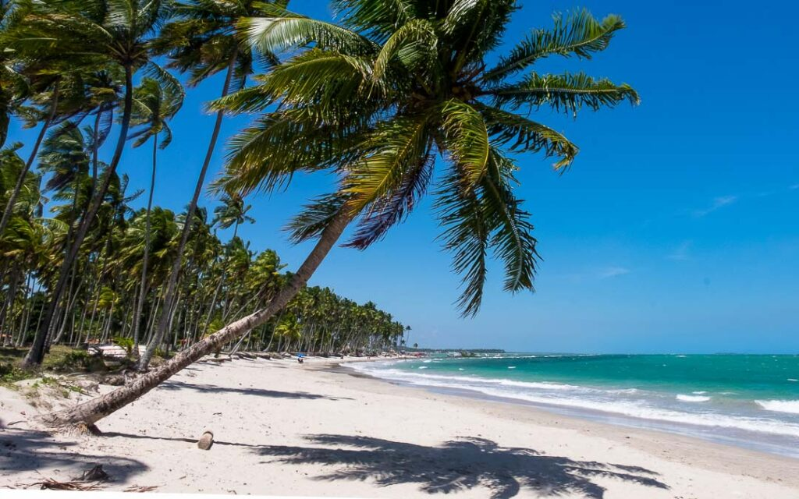

|
 |
 |
PRAIA DOS CARNEIROS
A Praia dos Carneiros em Pernambuco é um dos destinos mais famosos
e desejados do Brasil. E é fácil entender o motivo quando você
chega no lugar e vê tantas belezas naturais.
Um dos lugares mais famosos em Carneiros é a Capela São Benedito.
A pequena igrejinha do século XVIII fica na areia, bem em frente ao mar.
Ela é tão tradicional que é comum ter a celebração de casamentos por lá,
assim como batizados.
Venha desfrutar dessas maravilhas!
Pacotes Promocionais
| Opções | Valor |
|---|---|
| Hospedagem + Passeios | R$1.500 |
| Passeios | R$750 |
PÁGINA INICIAL